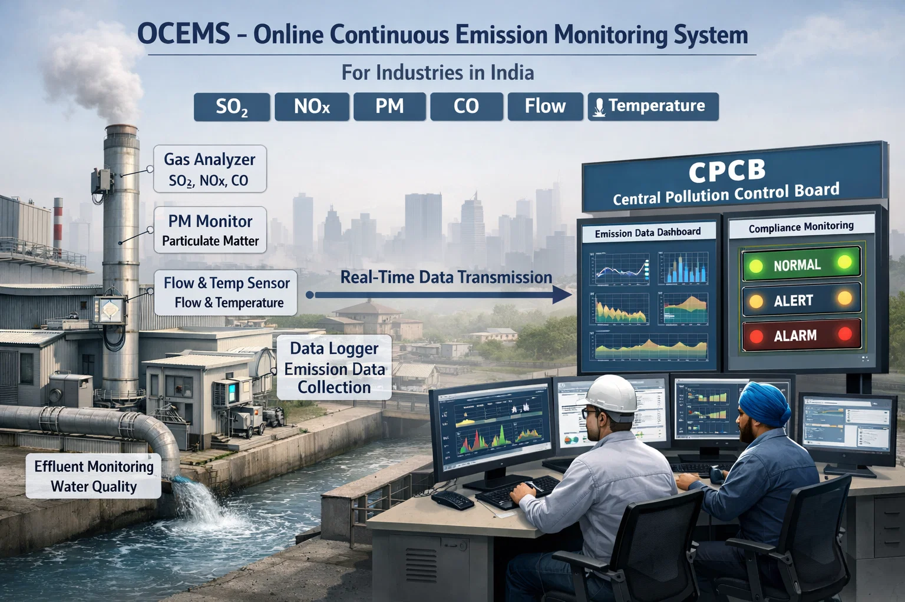

OCEMS Installation Requirements for Industries in Mumbai

With rising environmental regulations and digital pollution monitoring mandates, Online Continuous Effluent Monitoring Systems (OCEMS) have become mandatory for industries in Mumbai. The Central Pollution Control Board (CPCB) and Maharashtra Pollution Control Board (MPCB) have issued strict guidelines for OCEMS installation, real-time data transmission, and continuous compliance.
Mumbai’s dense industrial ecosystem, coastal geography, and high population exposure make real-time effluent monitoring critical for environmental protection and regulatory transparency.
This blog explains OCEMS installation requirements for industries in Mumbai, MPCB–CPCB guidelines, and how Agua Instruments ensures seamless, audit-ready compliance.
What Is OCEMS?
OCEMS (Online Continuous Effluent Monitoring System) is an automated, real-time monitoring system installed at industrial effluent discharge points. It continuously measures wastewater quality parameters and transmits live data directly to CPCB and MPCB servers.
- Continuous, real-time monitoring
- Tamper-proof and transparent data
- Automated regulatory reporting
- Reduced inspection disputes
Why OCEMS Is Mandatory in Mumbai
Mumbai is classified as a high-risk pollution-sensitive zone due to:
- High concentration of industries
- Coastal and marine ecosystems
- Creeks, rivers, and municipal drainage networks
- Dense urban population
MPCB strictly enforces OCEMS installation for Red and Orange category industries, STP/ETP operators, and units discharging into creeks, rivers, or municipal drains. Non-compliance can result in penalties, consent withdrawal, or closure notices.
CPCB & MPCB OCEMS Installation Guidelines
1. Mandatory Installation Location
- Final outlet of ETP / STP
- Before mixing with any other stream
- Inside a secure, weatherproof analyzer shelter
Bypass arrangements or temporary installations are strictly prohibited.
2. Parameters Required for Monitoring
- pH
- COD
- BOD
- TSS
- Flow
- Conductivity
- Oil & Grease
- Ammonical Nitrogen
All analyzers must be CPCB-approved and industrial grade.
3. Approved Analyzers & Sensors
- Online water quality analyzers
- High-accuracy industrial sensors
- Stable performance in harsh & coastal environments
4. Data Logger & Communication System
- Secure industrial data logger
- GPRS / LAN / IoT communication module
- Automatic data transmission at defined intervals
Manual uploads or offline storage are not permitted.
5. Real-Time Data Transmission
- Live data transmission to CPCB & MPCB servers
- Encrypted and secure communication protocols
- No data manipulation or loss
6. Power Backup & System Uptime
- UPS and backup power arrangements
- Minimum downtime
- 24×7 uninterrupted OCEMS operation
7. Calibration & Maintenance
- Periodic analyzer calibration
- Maintenance by authorized service providers
- Proper calibration records for audits
8. Camera Integration (If Applicable)
- CCTV camera at discharge point
- Live video feed integrated with OCEMS
Common OCEMS Installation Mistakes
- Incorrect analyzer placement
- Use of non-approved sensors
- Poor communication networks
- Data gaps and sensor drift
- Irregular maintenance
How Agua Instruments Ensures OCEMS Compliance
- CPCB-approved online COD & BOD analyzers
- pH, TSS, Flow & Conductivity sensors
- Secure data loggers & IoT gateways
- Optional gas analyzers for emission monitoring
Industries Required to Install OCEMS
- Chemical & petrochemical plants
- Pharmaceutical manufacturing units
- Textile & dyeing industries
- Food & beverage processing units
- Power plants
- Large STPs & ETPs
Benefits of Proper OCEMS Installation
- 100% MPCB & CPCB compliance
- Reduced inspection pressure
- Avoidance of penalties and shutdowns
- Improved STP / ETP efficiency
- Transparent environmental reporting
Conclusion
OCEMS installation is mandatory for industries in Mumbai under CPCB and MPCB regulations. Correct installation, approved analyzers, secure data transmission, and regular maintenance are essential for uninterrupted compliance.
Agua Instruments — Reliable OCEMS Solutions for Compliance & Environmental Protection.